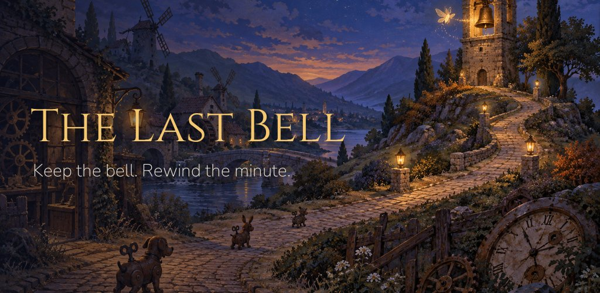
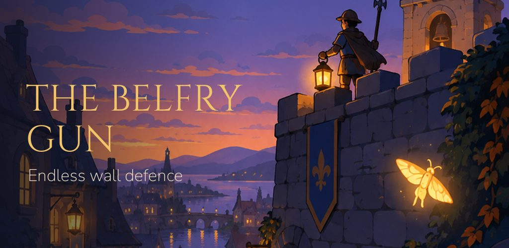

BlairsLab Games
One world. Many small games.
The official wiki for the BlairsLab mobile games, with guides, tips and lore for Hivewright, The Last Bell, The Last Second Workshop and more.
BlairsLab is a small independent studio in Australia. Our games are about clockwork creatures, stopped clocks and the people who wind them back up.
All of the games are set in the same world, and you can play any one of them without the others. This site has the guides, characters and lore for each. Pick a game below, or read about the shared world first.
Our games
Each game is complete on its own. Pick one to read its guides, characters and secrets.
- Live on Google Play
Hivewright
Idle incremental game · AndroidWake the hive. Climb the tower. Start the clocks again.
- Live on Google Play
The Last Bell
Tower defence game · AndroidKeep the bell. Rewind the minute.
- Live on Google Play
The Last Second Workshop
Idle incremental game · AndroidOne second is left. Build a workshop inside it.
- In closed testing
- In testing
The Belfry Gun
Wall-defence shooter · AndroidOne thumb, one wall, and a hill full of Rust that never stops coming.
- In closed testing
The Roads Between
Story RPG · AndroidWind the world's stopped clocks back up, one town at a time.
Join the community
Talk about the games, share what you have built and tell us what you would like to see next.
Join our Discord